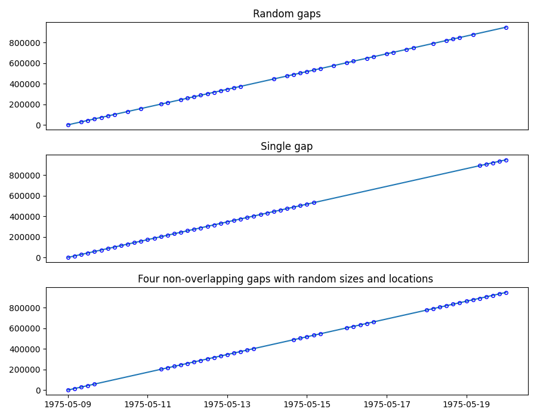

Note
Click here to download the full example code
Inserting gaps in a time series
We will generate a linear time series with a sampling frequency of 4 hours, from 1975/05/09 to 1975/05/20, and remove 35% of the data using three different methods:

Random: removes data points at random location
Single: create a single data gap
Multiple: create a given number of gaps at random locations and of random sizes
import matplotlib.pyplot as plt
import pandas as pd
from indsl.signals.generator import insert_data_gaps, line
start = pd.Timestamp("1975/05/09")
end = pd.Timestamp("1975/05/20")
line1 = line(start_date=start, end_date=end, slope=1, intercept=5, sample_freq=pd.Timedelta("4 h"))
remove = 0.35
fig, (ax1, ax2, ax3) = plt.subplots(3, 1, figsize=(9, 7))
# Random Gaps
ax1.plot(line1, "-")
ts_rnd_gaps = insert_data_gaps(data=line1, fraction=remove, method="Random")
ax1.plot(ts_rnd_gaps, "bo", mec="b", markerfacecolor="None", markersize=4)
# Single gap
ts_1_gap = insert_data_gaps(data=line1, fraction=remove, method="Single")
ax2.plot(line1, "-")
ax2.plot(ts_1_gap, "bo", mec="b", markerfacecolor="None", markersize=4)
# Multiple gaps
ts_mult_gaps = insert_data_gaps(data=line1, fraction=remove, method="Multiple", num_gaps=4)
ax3.plot(line1, "-")
ax3.plot(ts_mult_gaps, "bo", mec="b", markerfacecolor="None", markersize=4)
ax1.set_title("Random gaps")
ax2.set_title("Single gap")
ax3.set_title("Four non-overlapping gaps with random sizes and locations ")
ax1.get_xaxis().set_visible(False)
ax2.get_xaxis().set_visible(False)
fig.tight_layout()
plt.show()
Total running time of the script: ( 0 minutes 0.186 seconds)